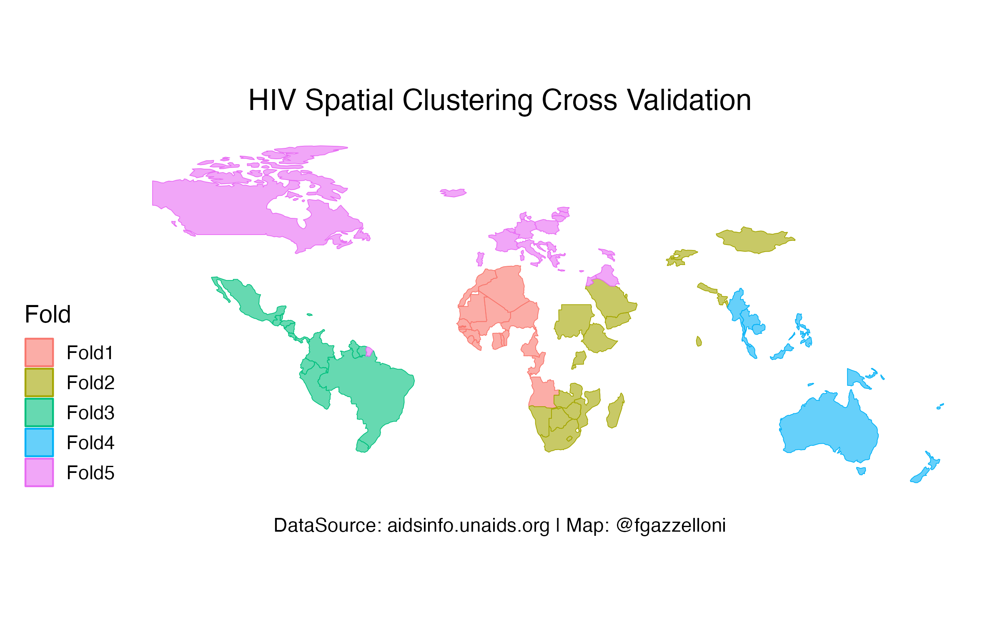

library(tidyverse)
library(tidymodels)
tidymodels_prefer()
library(spatialsample)
library(sf)
library(tmap)
data("World")Epidemic transition metrics of HIV infections estimation
Dataset: Global data on HIV epidemiology and response (aidsinfo.unaids.org)
Health metrics analysis of HIV infection indicators using R, UNAIDS data, spatial methods, and epidemic transition measures.
Overview
HIV infections data is from the aidsinfo.unaids.org. The data contains Global values from 2010 to 2022 for HIV estimate, HIV incidence of mortality, HIV prevalence, and HIV deaths.

National data for the 2010 and 2020 are included in this dataset.
The following is estimating magnitude of change along 10 years time-frame from 2010 to 2020 of HIV infections for all countries with available data.
Load necessary libraries.
HIV average values (2010-2020)
This first dataset contains the average values, obtained by averaging the lower and upper bounds of 2010 and 2020 HIV infections for 173 countries.
aids_avg <- read.csv("data/aids_avg.csv")
aids_avg <- aids_avg%>%
filter(!country=="Global")%>%
filter(!country=="India")%>%
rename(aids_cc = aids_change2)
aids_avg%>%dimThe percent change relative to the sum of changes for all countries is given by:
\[\text{Percent Change (Relative to Sum)}=(\frac{\text{(Final Value−Initial Value)}}{∑(Final Value−InitialValue)})×100\] This will give you the percent change for each country relative to the sum of all changes. As well as the percentage contribution of each country's change to the total change can be obtained.
HIV Prevalence ratio (2010-2020)
prevalence_rt <- read.csv("data/Epidemic transition metrics_Incidence_prevalence ratio.csv")
aids_prevalence_rt<-prevalence_rt%>%
filter(!Country=="Global")%>%
select(!contains("Footnote"))%>%
select(contains(c("Country","2010","2020")))%>%
mutate(avg_2010=(as.numeric(X2010_upper)-as.numeric(X2010_lower))/2,
avg_2020=(as.numeric(X2020_upper)-as.numeric(X2020_lower))/2,
aids_change=(avg_2020-avg_2010),
country_change=round(aids_change/avg_2010,5),
aids_prev_cc=round(aids_change/sum(aids_change,na.rm = T),5))HIV Incidence Mortality Ratio (2010-2020)
inc_mort_ratio <- read_csv("data/Epidemic transition metrics_Incidence_mortality ratio.csv")
aids_inc_mort_ratio <- inc_mort_ratio%>%
janitor::clean_names()%>%
filter(!country=="Global")%>%
select(!contains("Footnote"))%>%
select(contains(c("Country","2010","2020")))%>%
mutate(avg_2010=(as.numeric(x2010_upper)-as.numeric(x2010_lower))/2,
avg_2020=(as.numeric(x2020_upper)-as.numeric(x2020_lower))/2,
aids_change=(avg_2020-avg_2010),
country_change=round(aids_change/avg_2010,5),
aids_imr_cc=round(aids_change/sum(aids_change,na.rm = T),5))HIV Deaths (2010-2020)
deaths <- read_csv("data/Epidemic transition metrics_Trend of AIDS-related deaths.csv")
aids_deaths<- deaths%>%
filter(!Country=="Global")%>%
filter(!Country=="India")%>%
select(!contains("Footnote"))%>%
select(contains(c("Country","2010","2020")))%>%
janitor::clean_names()%>%
mutate(x2010_upper=as.numeric(str_extract(x2010_upper,"([0-9]+)")),
x2010_lower=as.numeric(str_extract(x2010_lower,"([0-9]+)")),
x2020_upper=as.numeric(str_extract(x2020_upper,"([0-9]+)")),
x2020_lower=as.numeric(str_extract(x2010_lower,"([0-9]+)")),
avg_2010=(x2010_upper-x2010_lower)/2,
avg_2020=(x2020_upper-x2020_lower)/2,
aids_change=(avg_2020-avg_2010),
country_change=round(aids_change/avg_2010,5),
aids_d_cc=round(aids_change/sum(aids_change,na.rm = T),5))All Data
dat<- aids_avg%>%
select(country,aids_cc)%>%
left_join(aids_prevalence_rt%>%select(Country,aids_prev_cc),
by=c("country"="Country"))%>%
left_join(aids_inc_mort_ratio%>%select(country,aids_imr_cc),
by=c("country"))%>%
left_join(aids_deaths%>%select(country,aids_d_cc),
by=c("country"))
dat%>%headdat%>%
dim()Barplot
dat%>%
pivot_longer(cols = contains("cc"))%>%
mutate(value=scale(value),
country=as.factor(country))%>%
drop_na()%>%
ggplot(aes(x=fct_reorder(country,value),y=value,
group=name,fill=name),color="grey24")+
geom_col(position = "stack")+
scale_y_log10(expand=c(0,0),label=scales::comma_format())+
labs(title="HIV Distributions (2010-2020)",
x="Country",
fill="",
caption = "Graphic: @fgazzelloni")+
theme(text=element_text(size=14),
axis.text.x = element_text(angle = 90,size=4,hjust=1),
panel.grid = element_blank(),
panel.background = element_rect(color = "grey24",fill="grey24"))World Polygons
World <- World %>%
select(country=name,geometry)%>%
filter(!country=="Antarctica")
aids_map <- dat%>%
pivot_longer(cols = contains("cc"))%>%
mutate(value=scale(value),
country=as.factor(country))%>%
drop_na()%>%
left_join(World,by="country")%>%
st_as_sf()%>%
st_transform(crs="ESRI:54030")labels=c("aids_cc"="HIV Country Contribution",
"aids_d_cc"="HIV Deaths Country Contribution",
"aids_imr_cc"="HIV incidence mortality rate Country Contribution",
"aids_prev_cc"="HIV Prevalence Country Contribution")Global HIV Map
ggplot()+
geom_sf(data=World,color="grey25",fill="grey75")+
geom_sf(data=aids_map,
mapping=aes(geometry=geometry,fill=value),
color="red")+
coord_sf(crs="ESRI:54030",clip = "off")+
facet_wrap(~name,labeller = labeller(name=labels))+
scale_fill_viridis_c()+
labs(caption="Map: @fgazzelloni")Spending Data
data <- dat%>%
drop_na()%>%
inner_join(World,by=c("country"))%>%
sf::st_as_sf(crs = 4326)set.seed(11132023)
split <- initial_split(data,prop = 0.8)
train<- training(split)
test <- testing(split)Spatial Cross validation
folds <- spatial_clustering_cv(train, v = 5)Mapping Spatial Clusters
autoplot(folds)+
labs(title="HIV Spatial Clustering Cross Validation",
caption="DataSource: aidsinfo.unaids.org | Map: @fgazzelloni")+
ggthemes::theme_map(base_size = 14)+
theme(plot.title = element_text(hjust=0.5),
plot.caption = element_text(hjust = 0.5))Function for calculating Predictions
source: https://spatialsample.tidymodels.org/articles/spatialsample.html
# `splits` will be the `rsplit` object
compute_preds <- function(splits) {
# fit the model to the analysis set
mod <- lm(aids_cc ~ aids_prev_cc+aids_imr_cc+aids_d_cc,
data = analysis(split)
)
# identify the assessment set
holdout <- assessment(split)
# return the assessment set, with true and predicted price
tibble::tibble(
geometry = holdout$geometry,
aids_cc = log10(holdout$aids_cc),
.pred = predict(mod, holdout)
)
}Spatial Clustering and Spatial Block cross validations
cluster_folds <- spatial_clustering_cv(data, v = 15)
block_folds <- spatial_block_cv(data, v = 15)cluster_folds$type <- "cluster"
block_folds$type <- "block"
resamples <-
dplyr::bind_rows(
cluster_folds,
block_folds
)cv_res <- resamples %>%
mutate(.preds = map(splits, compute_preds))cv_rmse <- cv_res %>%
unnest(.preds) %>%
drop_na()%>%
filter(!aids_cc==-Inf)%>%
group_by(id, type) %>%
rmse(aids_cc, .pred)cv_res %>%
unnest(.preds) %>%
ggplot(aes(fill = .pred)) +
geom_sf(data=World,mapping=aes(geometry = geometry),inherit.aes = F)+
geom_sf(aes(geometry = geometry)) +
labs() +
scale_fill_viridis_c() +
facet_wrap(~type)cv_res %>%
unnest(.preds) %>%
ggplot(aes(fill = aids_cc)) +
geom_sf(data=World,mapping=aes(geometry = geometry),inherit.aes = F)+
geom_sf(aes(geometry = geometry)) +
labs() +
scale_fill_viridis_c()